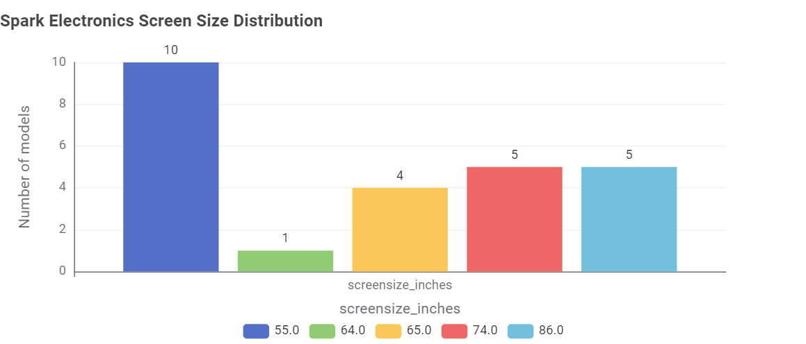

Almost every Australian home has a television, and screens keep getting bigger. But a TV
doesn't just cost money at the checkout. It keeps costing you every time it's switched on.
We looked at every TV model registered for sale in Australia to find out what really drives
a TV's power use, and how you can pick one that's kinder to your power bill.
The short version:
Bigger screens use more power: it is the biggest factor.
But TVs of the same size can differ hugely, so check the star rating.
Screen technology and brand matter less than size and stars.
What's in the shops?
Before looking at power use, it helps to know what you'll be choosing from.
Question 1: Which screen technologies are available?
Most TVs on sale are LED-backlit LCD
LCD (LED) makes up the large majority of models (3,797). Standard LCD (484) and
OLED (292) are far less common, so most shoppers will be comparing LED models.
Question 2: Which screen sizes are most common?
55" and 65" are the most popular sizes
65" and 55" each have around 770 models, followed by 75" (around 630). Big screens are
now the norm, which is why screen size is so important for running costs.
Question 3: Which brands have the most models?
A few brands dominate the range
Kogan (809), LG (723) and Samsung lead. Samsung is registered under two names
("Samsung Electronics" 699 and "Samsung" 497). Together it would have the most models.
The biggest driver: screen size
Question 5: How does screen size relate to power use?
The bigger the screen, the more power it uses
Power use climbs steadily with screen size. Small TVs under 40" mostly use less than
50 W, while 85" and larger TVs commonly use 150 to 500 W. Notice the dots also
spread out as screens get bigger. We come back to that below.
What does that mean for your power bill?
Going from a 55" to an 85" TV can more than double the running cost
Under 40"$35
40–49"$77
50–59"$105
60–69"$138
70–79"$179
80" and over$257
Estimated cost per year for a typical (median) TV in each size group. Based on the labelled
energy use (which assumes about 10 hours of viewing a day) and an assumed electricity price of
30c per kWh. Your actual cost depends on how much you watch and your electricity plan.
But size isn't everything: check the stars
Question 6: Do bigger TVs get worse star ratings?
Efficient TVs come in every size
There's no trend here: star ratings range from about 1 to 9 at almost every size.
Star ratings compare TVs of similar size, so a large TV can still earn a high rating.
Why this matters: among 65" TVs alone, labelled energy use ranges from
185 to 1,135 kWh a year. That's roughly $56 to $341 a year for the same
screen size. Over a TV's 10-year life, the less efficient model could cost you around
$2,800 more to run.
What about technology and brand?
Question 4: Which screen technology uses the least power?
OLED uses a little more, but the gap is small
Standard LCD has the lowest median power (71 W), then LCD (LED) at 106 W and
OLED at 113 W. Be careful: OLED TVs tend to be bigger (median around 65") than
LCD TVs (around 55"), so part of this difference is really about screen size.
Question 7: Do some brands use more power than others?
Brands vary, but models vary even more

Spark Electronics has the highest average (233 W), but the "Spark Electronics sizes"
tab shows why: all 25 of its models are 55" or larger, so its high average is mostly about
screen size, not poor efficiency. Big brands such as
Samsung, Sony, TCL, LG and Hisense average 130 to 155 W. But the box plot shows that power use varies widely
within each brand, mostly because each brand sells many sizes. Picking a
brand won't guarantee an efficient TV. Compare individual models instead.
What this means for you
1. Choose the size you need
Measure your room. Every step up in size adds to your yearly running cost.
2. Compare stars within that size
Two TVs of the same size can cost hundreds of dollars a year apart. More stars means lower bills.
3. Read the label, not the brand
Check the kWh per year figure on the Energy Rating Label for each model you're considering.